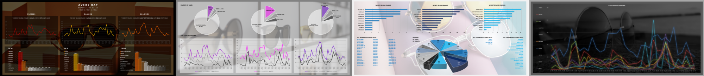
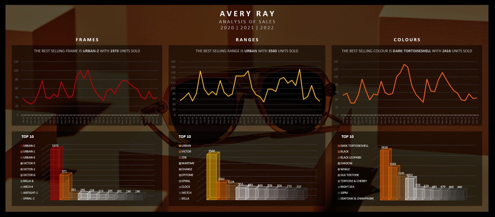
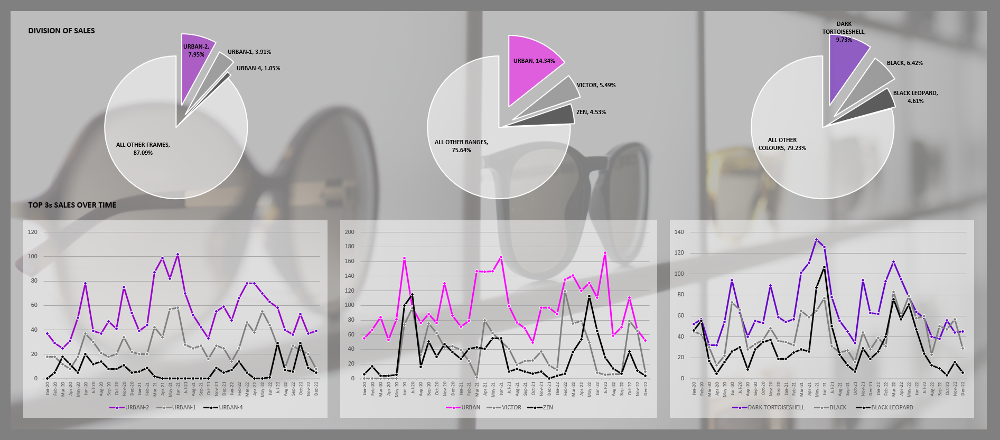
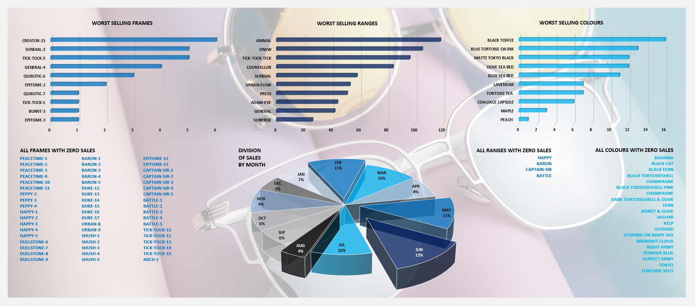
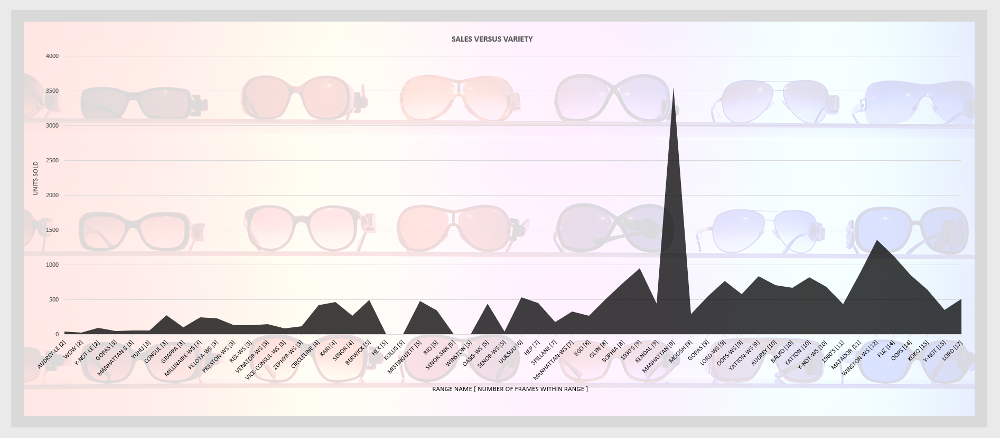
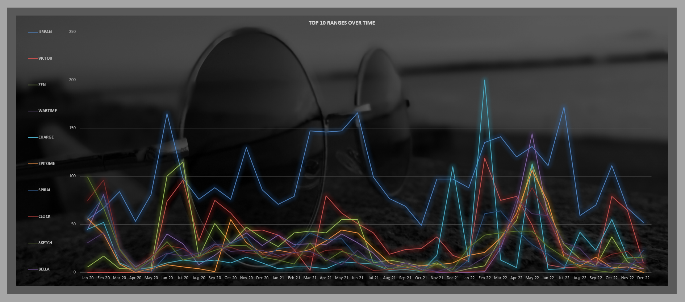

Avery Ray: Fashion Brand Analysis
Enhance sales efficiency by providing a clearer understanding of sales performance.
Solo Analyst
The Brief
Avery Ray is a designer sunglasses company known for its innovative designs and high quality look. I met with the CEO at the company head office where we discussed their objectives for my analysis. We focused in on a primary goal of identifying the most successful sunglasses for the brand, with an aim of reducing financial losses due to overstocking on underperforming frames.
Note: The name 'Avery Ray' is a pseudonym to protect the confidentiality of the actual brand. The data presented here has been modified for illustrative purposes.
Data Overview
The CEO gave me an Excel workbook containing all the sales figures across all product lines for the years 2020, 2021 and 2022. They felt that the data therein was representative of typical sales and where the sales were heading in the future. I raised concerns about the influence of Covid as a major part of this period, however, the CEO felt it was important to look at these most recent sales years.
Analytical Approach
- I looked carefully at the Excel workbook provided deciding to reorganise the data for better clarity and make it simpler for me to work with.
- I prepared a series of questions for myself based on talks with the CEO of all the information I wanted to extract from the data.
- I chose to focus on three key areas: the individual frames themselves; the different ranges of sunglasses; and the various colours and patterns used.
- I developed a dynamic and visually informative dashboard to clearly present my findings to the CEO.
Visualisation of Results
Below are the series of dashboards I created to present my findings within the data. I aimed at creating visually interesting and engaging dashboards, using images taken from the brand's website.
Highlighting the top selling frames, ranges and colours, with their top tens.
Looking at the division of sales, and examining the top three sellers over time.
Identifying the worst selling frames, ranges and colours, as well as those with zero sales.
A look at if ranges with more variety of frames and colours perform better overall.
Comparing the sales of the top ten ranges over time.
Conclusions
- Top Performers: A small selection of frames and one particular range dominated sales.
- Underperforming Products: Identified numerous frames and ranges that had poor or no sales.
- Color Preferences: Black and darker shades significantly outperformed other colours.
Looking at all the data I concluded that there were too many unnecessary frames and ranges, some of which were selling badly and some not selling any units at all. It was very clear to me from all the charts that the real workhorses of the brand were just a few frames and one particular range. These accounted for the vast majority of sales. There was also a clear indication that black and darker colours sold best, by a large margin.
Looking out beyond these core best-selling frames and colours there were a few frames and ranges offering more variety for the brand that were doing well in sales and clearly a worthwhile part of the overall stock. I concluded that a good third of the ranges and frames could easily be dropped and abandoned with no affect to sales. Indeed, the money savedfrom not designing and producing these frames would save the company massively, especially over time.
I recommended the company focus on their strengths, those few extremely popular frames. Then to give some variety and added flavour to the brand by continuing to produce the frames that sold reasonably well.
Learnings
During this project I learned the importance of stripping down the data to its most basic level. The original excel file I was provided with was very messy with a lot of columns and formulas that were a little distracting for me and drawing me away from the core data and what I wanted to focus in on. So, by initially simplifying the data to just the sales of frames and ranges, I was able to begin asking the relevant questions. I then worked through these questions methodically, figuring out the best way to visualise my findings.
I feel I could have improved my own efficiency spending less time reorganising the data tables. I am most satisfied with the visualisation of the data, which very clearly shows the brands strengths and gives clear answers to the CEOs questions.
I believe this project served as a great example of highlighting the importance of data-driven decision-making in optimizing product offerings and reducing unnecessary expenses.
Click below to download the project and view the dashboards and data. Note: due to GitHub file upload size limits, the Excel file available does not have background images.